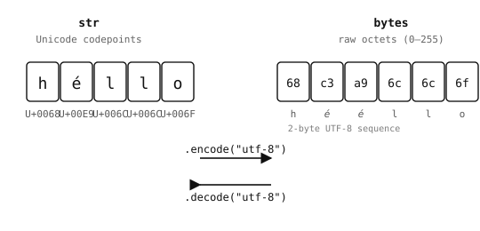

2.6. テキストとバイト列¶
Python には、生の文字データを扱う2つのシーケンス型があります。
str-- Unicode コードポイントの並び。ファイルパス、ログメッセージ、JSON ペイロードなど、人が読めるテキストすべてに使用します。bytes-- 0 から 255 の範囲の整数の並び。UART フレーム、画像バッファ、ネットワークパケット、レジスタ値など、生のバイナリデータに使用します。
この2つは、明示的な変換なしに混在させることはできません。str をハードウェアの write メソッドに渡すと TypeError が発生し、その逆も拒否されます。

str は Unicode 文字を格納し、bytes は生のオクテットを格納します。両者を相互に変換することを エンコード（str → bytes）および デコード（bytes → str）と呼びます。¶
2.6.1. bytes リテラル¶
bytes リテラルは、b を前に付けた文字列風のリテラルです。
header = b"OMV"
crlf = b"\r\n"
payload = b"\x01\x02\x03"
bytes リテラルの中に直接記述できるのは ASCII 文字のみです。非 ASCII の値は \xHH という16進エスケープで記述する必要があります。
2.6.2. エンコードとデコード¶
str.encode()は、指定したエンコーディング（デフォルトは"utf-8"）を使って文字列をバイト列に変換します。bytes.decode()はその逆を行います。
>>> "hello".encode()
b'hello'
>>> "héllo".encode()
b'h\xc3\xa9llo' # é is two bytes in UTF-8
>>> b"hello".decode()
'hello'
UTF-8 がデフォルトであり、非 ASCII 文字を含む可能性のあるものすべてに適した選択です。データが確実に純粋な ASCII であると保証できる場合にのみ "ascii" を使ってください。そうすれば、紛れ込んだ非 ASCII バイトは黙って通過するのではなく UnicodeError を発生させます。
2.6.3. インデックス指定とスライス¶
bytes の値はインデックス指定すると、1バイトの文字列の並びではなく整数の並びのように振る舞います。
>>> data = b"abc"
>>> data[0]
97 # the int 97, not 'a'
>>> data[0:1]
b'a' # slicing returns bytes
よくある間違いは data[0] == "a" を比較して、結果が False になることに驚くことです。data[0] は整数であって1文字の文字列ではないため、両者が一致することは決してありません。
2.6.4. ord と chr -- 文字と整数の橋渡し¶
bytes をインデックス指定すると整数が返りますが、プログラムの他の部分はおそらく文字単位で考えているでしょう。そこで Python は、両者の間を行き来するための2つの組み込み関数を提供しています。
>>> ord("a")
97
>>> chr(97)
'a'
>>> ord("A"), chr(0x41)
(65, 'A')
ASCII 文字の場合、コードポイントはバイト値と等しいので、ord("a") と b"a"[0] はどちらも 97 になります。これにより、実際に気にしている文字の観点でバイト比較を読めるようになります。
>>> data = b"abc"
>>> data[0] == ord("a") # instead of the magic number 97
True
また chr() は、バイトの印字可能な形を見たいときのログ出力やデバッグに便利です。
>>> chr(data[0])
'a'
非 ASCII 文字の場合、ord() は Unicode コードポイントを返しますが、これはエンコードされた形のいずれの単一バイトとも一致しません。バイト表現はエンコーディングによって異なります。
2.6.5. 可変バッファ用の bytearray¶
bytes は不変であり、すべての「変更」は新しいオブジェクトを返して元のオブジェクトはそのまま残します。変更したり、追加したり、少しずつ埋めていったりするつもりのデータには、bytearray を使ってください。bytes と同じ内容を保持しますが、その場での変更をサポートします。
>>> s = b"hello"
>>> s[0] = ord("H")
Traceback (most recent call last):
File "<stdin>", line 1, in <module>
TypeError: 'bytes' object does not support item assignment
>>> s = bytearray(b"hello")
>>> s[0] = ord("H")
>>> s
bytearray(b'Hello')
2.6.5.1. bytearray の作成¶
bytearray のコンストラクタは、いくつかの入力を受け付けます。
bytearray(8)-- ゼロバイト8個分のバッファ。bytearray(b"hello")-- bytes 値の可変なコピー。bytearray("hello", "utf-8")-- 指定したエンコーディングを使って文字列から作る bytearray。bytearray([72, 73, 74])-- 0 から 255 の整数の並びから作る bytearray（ここではb"HIJ"）。
>>> bytearray(4)
bytearray(b'\x00\x00\x00\x00')
>>> bytearray(b"abc")
bytearray(b'abc')
>>> bytearray("café", "utf-8")
bytearray(b'caf\xc3\xa9')
2.6.5.2. bytearray の変更¶
インデックス指定およびスライスによる代入は、list とまったく同じように動作します。
>>> buf = bytearray(8) # 8 zero bytes
>>> buf[0] = 0xFF # one byte at a time
>>> buf[1:4] = b"ABC" # replace a slice
>>> buf
bytearray(b'\xffABC\x00\x00\x00\x00')
個々のバイトは 0 から 255 の整数でなければなりません。それ以外の型を代入すると TypeError または ValueError が発生します。
スライス代入はバッファの長さを変えることができます。スライスをより長い値で置き換えると bytearray は大きくなり、より短い値で置き換えると縮みます。b"" で置き換えると、そのスライスは完全に削除されます。
>>> buf = bytearray(b"abcdef")
>>> buf[1:3] = b"XYZ" # 2 bytes replaced with 3
>>> buf
bytearray(b'aXYZdef')
>>> buf[1:4] = b"" # delete the inserted run
>>> buf
bytearray(b'adef')
bytearray.append() および bytearray.extend() メソッドは、毎回バッファ全体を再確保することなく末尾にバイトを追加します。
>>> buf = bytearray()
>>> buf.append(0x01)
>>> buf.extend(b"abc")
>>> buf
bytearray(b'\x01abc')
2.6.5.3. bytearray からの読み出し¶
インデックス指定、スライス、反復、および bytes の検査メソッド（bytes.startswith()、bytes.find()、bytes.strip() など）はすべて、bytes の値に対する場合と同じように動作します。インデックス指定は整数を返し、スライスは別の bytearray を返します。
>>> buf = bytearray(b"OpenMV")
>>> buf[0]
79
>>> buf[0:4]
bytearray(b'Open')
>>> buf.startswith(b"Open")
True
2.6.5.4. bytes と bytearray の相互変換¶
bytes と bytearray は、それぞれのコンストラクタで相互に変換できます。API が特定の形を要求する場合にこれを使ってください。
>>> ba = bytearray(b"hello")
>>> snapshot = bytes(ba) # immutable copy
>>> ba[0] = ord("H")
>>> ba, snapshot
(bytearray(b'Hello'), b'hello')
2.6.5.5. ゼロコピーのスライス用 memoryview¶
bytes や bytearray をスライスすると、通常はバイトが新しいバッファにコピーされます。memoryview は、コピー せずに 同じバイトを公開します。
>>> buf = bytearray(b"OpenMV Cam")
>>> view = memoryview(buf)
>>> view[0:6] # shares storage with buf
<memoryview ...>
>>> bytes(view[0:6]) # materialise as bytes when needed
b'OpenMV'
bytearray 上のビューは書き込み可能でもあります。ビューを変更すると、その下にあるバッファが変更されます。
>>> view[0] = ord("o")
>>> buf
bytearray(b'openMV Cam')
スライスのコピーが無駄になる場合、つまり典型的には同じ大きなバッファを受け渡したり部分ごとに処理したりする場合には、memoryview を活用してください。小さな bytes に対する日常的な文字列風の作業であれば、通常のスライスで十分です。